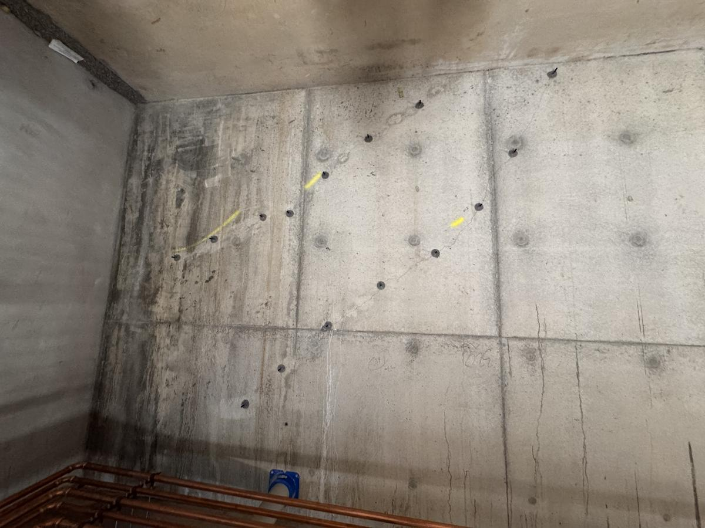
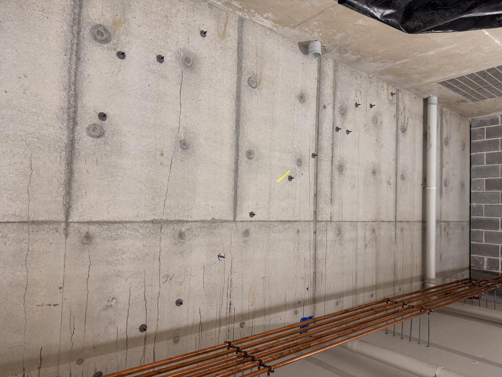
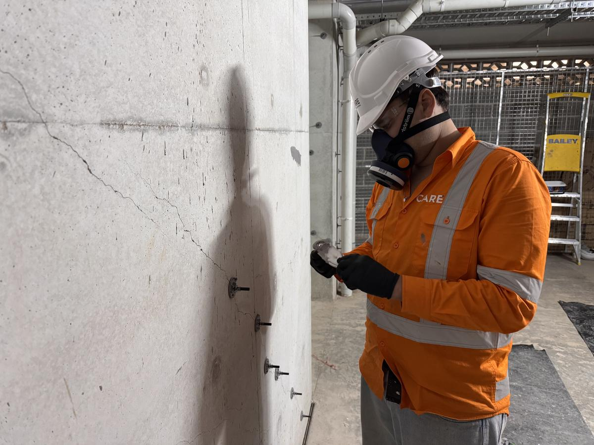
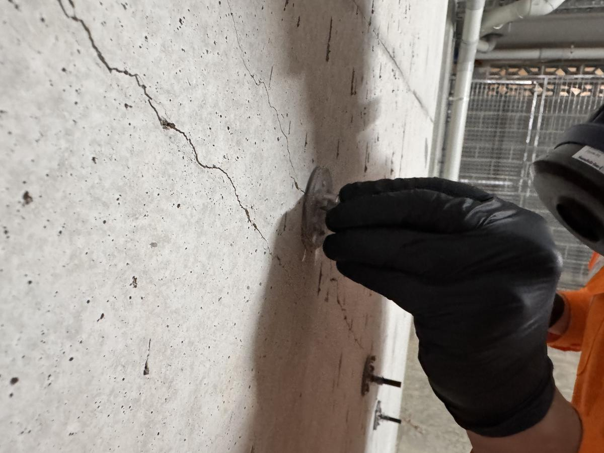
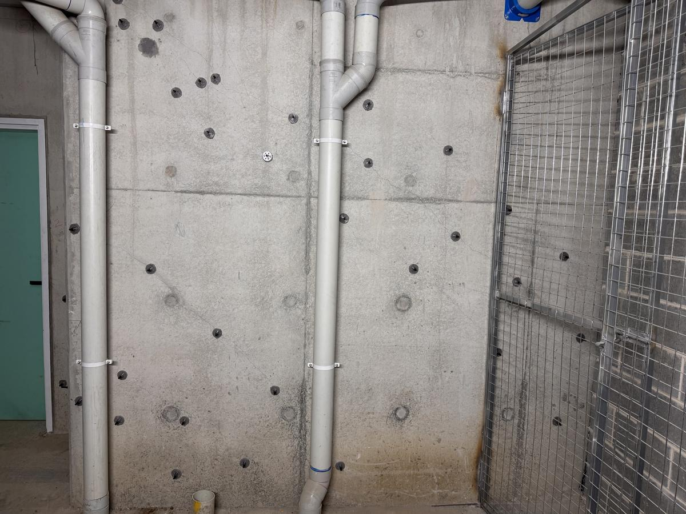
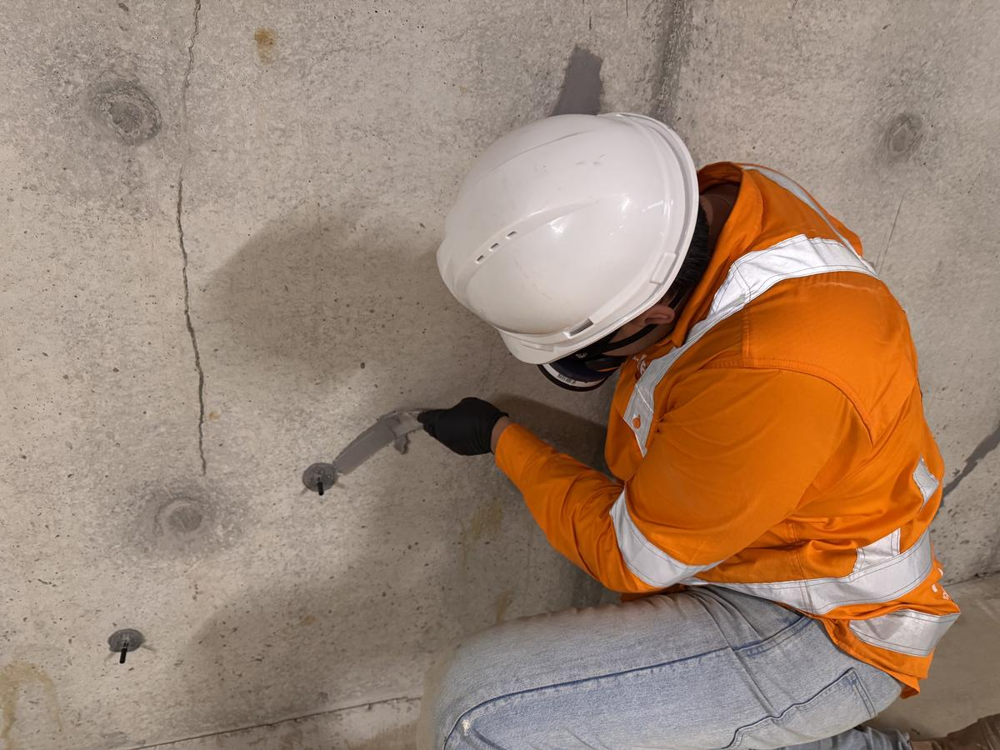
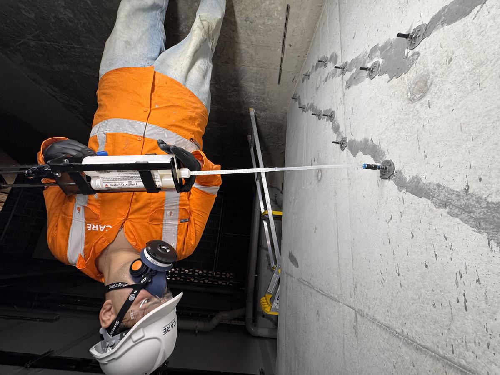
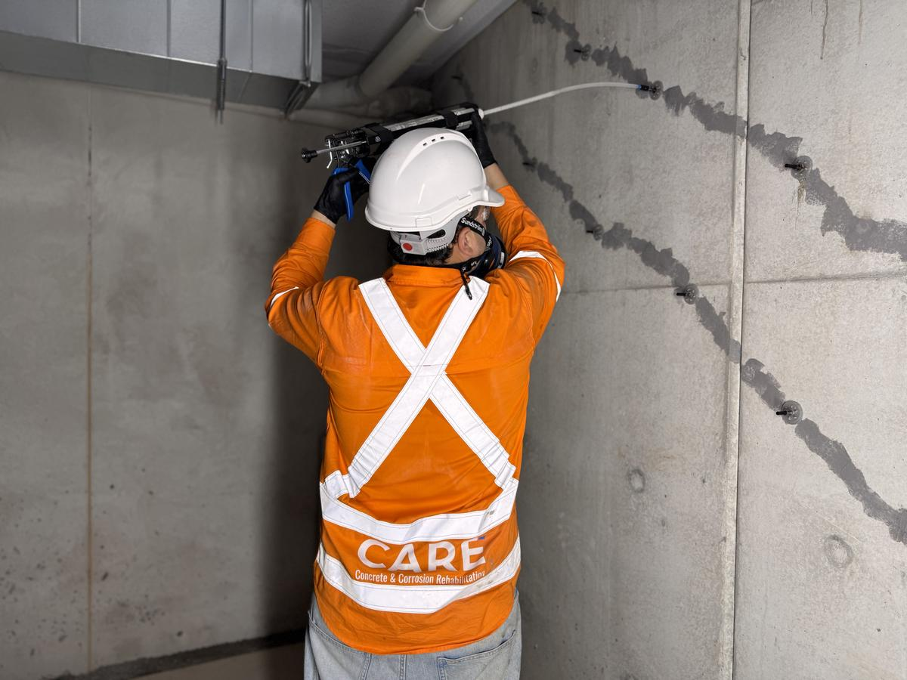
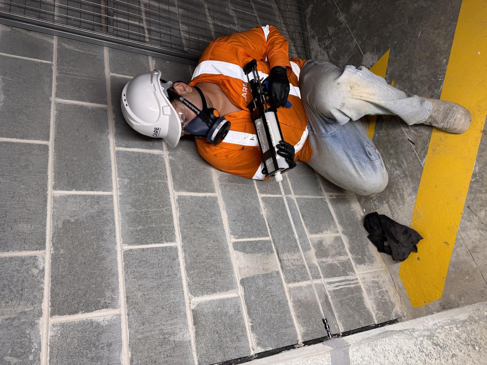
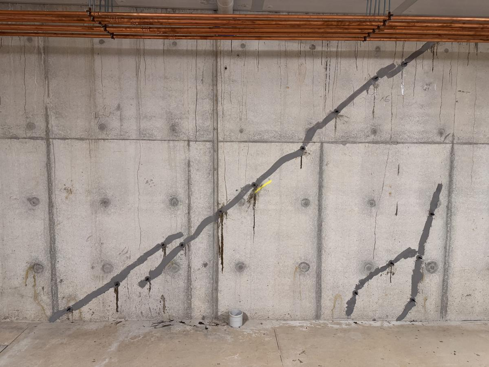

Project Case Study, Crack Injection
Crack Injection & Basement Repair at 14 Collins Road, St Ives.
CARE was engaged by Trescon Constructions to assess and treat cracking to in-situ concrete retaining walls in a newly constructed residential basement.
47 LMCrack length treated
3Day programme
52 LVSikadur system
Full-depthSikadur 52 LV
01, Background
The Challenge
An extensive network of cracks had developed across the basement retaining walls of a newly constructed residential development, with active water ingress evident across multiple panels.
CARE was engaged by Trescon Constructions following an on-site inspection to assess and treat cracking to the in-situ concrete retaining walls of the basement structure. The cracks ranged from fine shrinkage cracks to wider diagonal and structural cracks, with water staining and seepage visible across several areas.
The basement environment presented multiple challenges: restricted access in some bays, services and pipework running across the face of the walls, cracks extending to the soffit-wall junction, and a high standard of finish required by the principal contractor.
02, Scope of Works
What We Did
- Site inspection and crack mapping across all affected basement wall panels
- Supply and installation of low-pressure injection packers at 150-200 mm centres
- Surface sealing of cracks using Sikadur 31 two-part epoxy paste
- Full-depth injection of Sikadur 52 LV epoxy resin, 47 linear metres total
- Injection of tie-rod void points identified during works
- Crack injection to masonry block boundary wall at construction joints
- Post-injection packer removal and surface seal grinding
- Daily dockets completed and signed by site team
- ITP submitted with full photographic record on completion
03, Methodology
How We Did It
Full crack survey conducted prior to mobilisation. All affected areas confirmed with the site supervisor. SWMS reviewed and approved by Trescon before works commenced.
Low-pressure injection packers drilled and installed at 150-200 mm centres along each identified crack, including areas at high level and near the soffit.
Crack faces sealed between packers with Sikadur 31 two-part epoxy paste, creating a pressure-tight surface seal to allow effective pressurisation during injection.
Sikadur 52 LV injected using a manual two-component cartridge gun, working sequentially from the lowest packer upward. Resin return from adjacent packers confirmed full-depth penetration before moving on.
Packers removed, surface seal ground back on cure. Daily dockets signed by the site team. Full ITP with photo record submitted to Trescon on demobilisation.
04, Photo Record
Site Documentation
The following images document conditions prior to, during, and following completion of works across the three-day programme.










05, Outcome
Result
All 47 linear metres of crack injection works were completed within the planned three-day programme and within the agreed scope. The Sikadur 52 LV epoxy penetrated the full depth of the wall sections, providing structural consolidation of the crack planes and sealing active seepage paths where present.
An Inspection and Test Plan (ITP) with a full photographic record organised by day was submitted to Trescon on completion. The project demonstrates CARE's capability in managing technically complex crack injection programmes within occupied and serviced basement environments.
Need basement crack injection support?